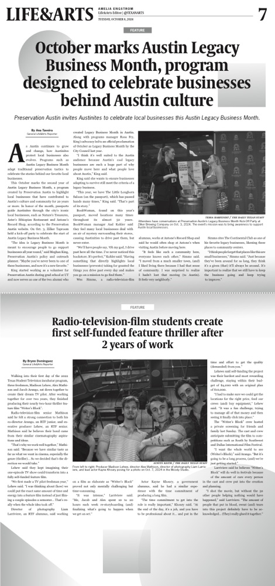
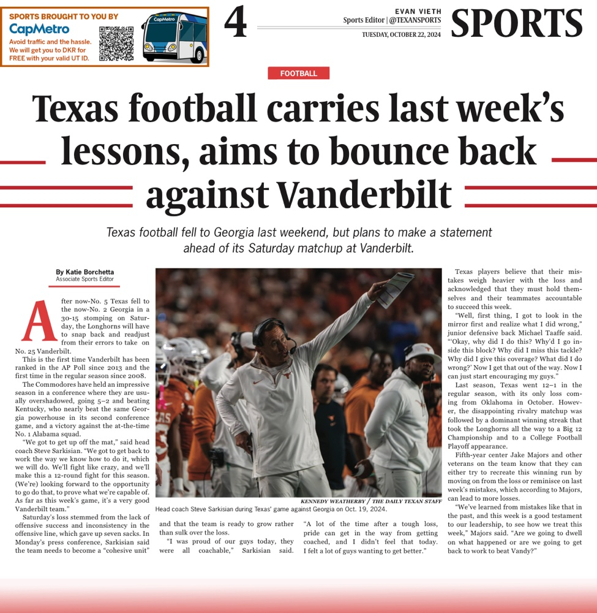
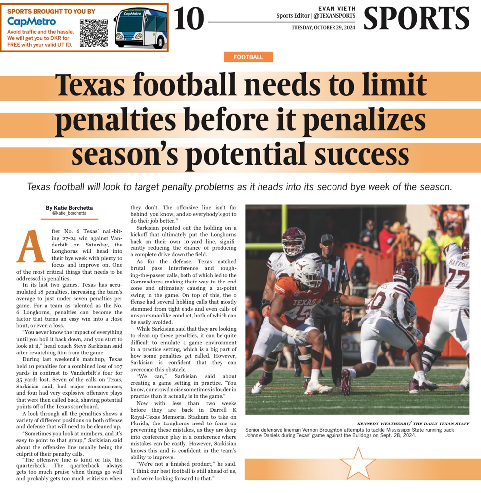

Reporting
The Daily Texan, July 6, 2025
The Power of Teaching Shakespeare: How an Austin Theater Makes the Bard's Work Accessible
Read the articleLatAm Journalism Review
In Uruguay, This Newspaper Builds Journalism With Radio, Documentaries and Its Readers
Read the articleSubstack
Angel House Soup Kitchen
Read the articleMarketing
Print & Video Design



Strategic Planning
- Designing a civic fellowship at Austin Community College's Center for Government & Civic Service to train students in leadership and productive political disagreement.
- Implementing a citizen assembly that brings community members together to deliberate on a social issue and develop recommendations for a representative body, in partnership with New America and Campus Compact.
- Executed a Central Texas Journalism Summit that gathered eight college newspapers from across the state to create a community of practice promoting greater impact, protection and collaboration in college journalism.
- Designed and ran civic leadership simulations that train students in skills such as strategic communication, conflict management and ethical decision-making.
- Trained facilitator of the Great Questions Seminars, public forums that use classic historical, philosophical and literary texts to engage students and community members in dialogue about our human experience.